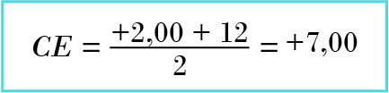

Em razão do crescimento do número de pessoas que precisam utilizar óculos, é necessário que os responsáveis da área estejam em constante formação e aperfeiçoamento de seu trabalho. Para isso, deve-se buscar conhecimento. A seguir, você verá explicações a respeito do índice de refração e sua respectiva fórmula para aplicação, os materiais e seus devidos valores, os cálculos de fator de conversão, transposição e cálculos para a fabricação de lentes.
Para entregar um produto de qualidade, é de extrema importância conhecer os tipos de material. Neste conteúdo, você verá tipos de lente e como aplicar suas fórmulas na hora de confeccionar os óculos, bem como equipamentos e insumos utilizados pelo profissional da óptica.
O índice de refração é a razão entre a velocidade da luz no vácuo e a velocidade da luz em outro meio. Está diretamente relacionado com a diferença de densidade de dois meios. Nos meios isotrópicos, isto é, quando as propriedades físicas se relacionam com um ponto de um meio que não depende de uma direção, está relacionado ao comprimento de onda da radiação e da temperatura. Nos meios anisotrópicos, isto é, quando depende da direção da propagação, o índice de refração descreve a velocidade com que um feixe de luz atravessa o meio. Desse modo, quando um raio de luz sofre refração em um meio, ocorre a relação entre ângulo de incidência e o ângulo de refração. O índice de refração pode ser definido por meio da seguinte fórmula.
Veja, na tabela a seguir, o índice de refração de alguns materiais e sua velocidade da luz no ar e no vácuo.
| Material | Índice de refração relativo | Velocidade da luz no ar (km/s) | Velocidade da luz no vácuo (km/s) |
|---|---|---|---|
| Ar | 1,0003 | 299.910 | 300.000 |
| Água pura | 1,332 | 225.158 | 225.225 |
| Vácuo | 1,000 | - | 300.000 |
| High lite | 1,700 | 176.418 | 176.471 |
| Cr - 39 | 1,499 | 200.073 | 200.133 |
| Vidro crown | 1,523 | 196.921 | 196.980 |
| Diamante | 2,419 | 123.980 | 123.967 |
Exemplo de uma lente orgânica CR39:
Exemplo de um material diamante:
Sempre que o índice de refração for maior, maior será o desvio do raio de luz. Existe uma relação direta entre o peso, a espessura e a curvatura das lentes e o índice de refração do material utilizado em sua confecção. Independentemente do material usado, quanto maior for o índice de refração, mais fina e leve ficará a lente e menos curvas terá.
O fator de conversão de índice é a razão entre as diferenças de dois índices de refração de matérias e o índice de refração absoluto. O fator de conversão é usado com os seguintes objetivos: fabricar uma lente, cujo índice de refração seja diferente do índice de refração do molde e converter a curva-base de uma lente em outra base com índice de refração diferente. Conforme Machado (2010, p.115), “Depois de obtido o fator de conversão, basta multiplicá-lo pelas dioptrias e depois fazer a combinação das curvas que resultarão nas dioptrias desejadas”.
Fórmula em que o fator de conversão é igual ao índice de refração do molde menos um, dividido pelo índice de refração do material, menos um.
Visualize alguns exemplos.
Clique ou toque para visualizar alguns exemplos.
Tendo um molde preparado para o n=1,530, será trabalhado um material de lente com n= 1,67. Qual o fator de conversão deve ser usado?
Calcular a curva interna para a confecção de uma lente no material 1,66, usando um molde preparado para o índice 1,530, com a refração de -2,00 – 1,50, tendo sido a curva externa elaborada com +4,00.
Multiplicar a força esférica e cilíndrica por 0,80.
Esférica -2,00 x 0,80 = - 1,60
Cilíndrica -1,50 x 0,80 = 1,20
Após a multiplicação, é necessário somar o valor encontrado no esférico à curva-base externa fornecida, e o resultado do cilíndrico ao resultado da soma do esférico com a base externa.
Curva oposta (CO) = -1,58 – (+ 4,00)
Curva oposta (CO) = -1,58 – 4,00
Curva oposta (CO) = - 5,58
Após calculada a curvatura esférica, o seu resultado é utilizado para encontrar a curvatura cilíndrica.
CO2 = - 5,58 + (-1,18)
CO2 = -5,58 -1,18
CO2 = - 6,76
Para que essa lente fique de acordo com a refração desejada, deve-se usar um molde com as curvaturas mais próximas de -5,58/-6,76.
Tendo um molde preparado para o n=1,530, será trabalhado um material de lente com n= 1,67. Qual o fator de conversão deve ser usado?
Calcular a curva interna para a confecção de uma lente no material 1,66, usando um molde preparado para o índice 1,530, com a refração de -2,00 – 1,50, tendo sido a curva externa elaborada com +4,00.
Multiplicar a força esférica e cilíndrica por 0,80.
Esférica -2,00 x 0,80 = - 1,60
Cilíndrica -1,50 x 0,80 = 1,20
Após a multiplicação, é necessário somar o valor encontrado no esférico à curva-base externa fornecida, e o resultado do cilíndrico ao resultado da soma do esférico com a base externa.
Curva oposta (CO) = -1,58 – (+ 4,00)
Curva oposta (CO) = -1,58 – 4,00
Curva oposta (CO) = - 5,58
Após calculada a curvatura esférica, o seu resultado é utilizado para encontrar a curvatura cilíndrica.
CO2 = - 5,58 + (-1,18)
CO2 = -5,58 -1,18
CO2 = - 6,76
Para que essa lente fique de acordo com a refração desejada, deve-se usar um molde com as curvaturas mais próximas de -5,58/-6,76.
Para relembrar o que foi estudado anteriormente sobre as prescrições com astigmatismo, utiliza-se a Transposição para a conversão da receita de cilíndrico positivo para negativo, para fins de fabricação da lente, ou seja, é a mudança de números e sinais que ocorrem sem alterar o valor dióptrico da lente, que é a maneira como toda lente cilíndrica (combinada ou tórica) pode ser lida/prescrita: uma com o sinal positivo e outra com o sinal negativo.
Repete-se o sinal, somam-se os dois valores para o novo esférico, inverte-se o sinal do cilíndrico, repete-se o seu valor e muda-se o eixo em 90°.
Acha-se a diferença entre os valores numéricos para o novo esférico com o sinal do maior, inverte-se o sinal do cilíndrico, repete-se o seu valor e muda-se o eixo em 90°.
O novo esférico será o valor do cilíndrico acompanhado de seu sinal; inverte-se o sinal do cilíndrico, repete-se o seu valor e muda-se o eixo em 90°.
Repete-se o sinal, somam-se os dois valores para o novo esférico, inverte-se o sinal do cilíndrico, repete-se o seu valor e muda-se o eixo em 90°.
Acha-se a diferença entre os valores numéricos para o novo esférico com o sinal do maior, inverte-se o sinal do cilíndrico, repete-se o seu valor e muda-se o eixo em 90°.
O novo esférico será o valor do cilíndrico acompanhado de seu sinal; inverte-se o sinal do cilíndrico, repete-se o seu valor e muda-se o eixo em 90°.
Observação: quando o eixo se apresentar maior que 90°, devem ser subtraídos 90°. Quando o eixo se apresentar menor que 90°, devem ser somados 90°. Na prescrição dos eixos, são utilizados valores de 0° a 180°.
Visualize os três exemplos a seguir:
| ESFÉRICO | CILÍNDRICO | EIXO | ||
|---|---|---|---|---|
| Longe | OD | +1,00 | -2,00 | 90 |
| Longe | OE | 0,00 | 0,00 | 0 |
Qual é a transposição?
Resultado: -1,00 +2,00 eixo 180°
Explicação: para sinais diferentes, realiza-se a subtração, conservando o sinal do maior (-1,00), o
sinal do cilíndrico ficará positivo mantendo o mesmo valor, e ao valor do eixo somam-se 90°.
| ESFÉRICO | CILÍNDRICO | EIXO | ||
|---|---|---|---|---|
| Longe | OD | +2.25 | +1.50 | 145 |
| Longe | OE | 0,00 | 0,00 | 0 |
| ESFÉRICO | CILÍNDRICO | EIXO | ||
|---|---|---|---|---|
| Longe | OD | 0,00 | +1,75 | 25 |
| Longe | OE | 0,00 | 0,00 | 0 |
Qual é a transposição?
Resultado: +1,75 -1,75 eixo 115°
Explicação: quando o esférico for plano (0,00), o valor do cilíndrico será o esférico mantendo o
mesmo valor no cilíndrico, apenas alterando o sinal, e ao valor do eixo somam-se 90°.
Clique ou toque para visualizar os três exemplos a seguir.
Para montar uma lente em determinada armação, você verá o diâmetro ideal, que é o diâmetro da lente pronta ou o bloco a ser surfaçado. A fórmula a seguir é a mais utilizada, ou seja, os resultados dessa fórmula são exatos somente para os casos em que o tamanho da armação seja igual à distância pupilar ou a altura de centro óptico esteja posicionada no centro geométrico do aro.
Fórmula em que o diâmetro ideal do bloco é igual à ponte da armação, mais o diâmetro da armação medida na horizontal do aro, mais o diâmetro maior do aro da armação, menos a distância pupilar, mais dois.
Fazendo combinações de curvas de um bloco de lente orgânica, policarbonato ou alto índice, tem-se o processo chamado de surfaçagem, cujo objetivo final é obter dioptrias que servirão para corrigir as ametropias. As lentes de visão simples, que também podem ser chamadas de monofocais, são utilizadas para apenas um campo de visão: perto ou longe, e podem ser esféricas, esféricas combinadas com cilíndrico, afocais ou prismáticas, o que as difere das lentes multifocais, nas quais é possível corrigir diferentes pontos de distância por meio de uma lente.
É a fórmula utilizada para identificar qual a base exata para a fabricação de lentes. Contudo, quando são utilizados blocos de lentes semiacabados, por vezes, não é possível fabricar a lente na base ideal, e sim o mais próximo dela. Sendo assim, veja a seguir a fórmula para encontrar a curva base ideal.
Fórmula em que a curva externa é igual à dioptria esférica, mais doze, dividido por dois.
Veja dois exemplos:
Em uma receita cuja a dioptria é +2,00, qual seria a base ideal?
Em uma receita cuja dioptria é -1,00, qual seria a base ideal?
Curva oposta, também chamada de curva interna, é a parte interna das lentes, apresentando-se, na maioria das vezes, de forma côncava negativa. Para a surfaçagem de lentes visão simples esféricas, será utilizada a seguinte fórmula para encontrar a curva oposta.
Fórmula em que a curva interna da lente é igual à dioptria, menos, abre parênteses, curva-base, fecha parênteses.
Por exemplo, em uma prescrição de -3,00 esférico com curva-base ideal +4,5, qual é a curva interna?
CO = -3,00 – (+4,50)
CO = -3,00 – 4,50
CO = -7,5
Para a surfaçagem de lentes visão simples cilíndricas, será utilizada a seguinte fórmula para encontrar a curva oposta 2.
Fórmula em que a curva interna cilíndrica dois é igual à curva interna da lente, mais o valor do cilíndrico.
Por exemplo, em uma prescrição de -3,00 -0,50 com curva-base ideal +4,5, qual é a curva interna?
CO = -3,00 – (+4,50)
CO = -3,00 – 4,50
CO = -7,5
CO2 = -7,5+(-0,50)
CO2 = -7,5 -0,50
CO2 = -8,00
É importante ressaltar que, ao calcular as curvaturas necessárias para gerar a dioptria nas lentes corretivas, alguns parâmetros de segurança precisam ser levados em consideração. Um deles é a espessura mínima que as lentes podem ter no seu centro ou borda, após a surfaçagem. A variação da espessura mínima funciona de maneira inversa à sua força dióptrica. Quando a superfície da lente apresenta duas curvaturas muito próximas (lentes com baixas forças dióptricas ou até lentes afocais), a espessura mínima precisa ser maior do que nas lentes de mais altas forças dióptricas, pois, pela diferença de suas curvaturas, já têm a segurança necessária.
A exata espessura mínima é de extrema importância, pois exerce uma alta influência sobre a força dióptrica. Para a espessura mínima de lentes positivas, utiliza-se os parâmetros apresentados na seguinte tabela.
| Dioptria (D) | Espessura mínima (e) |
|---|---|
| 0,00 a 0,25 | 2,0 mm |
| 0,50 a 1,00 | 1,8 mm |
| 1,25 a 2,25 | 1,6 mm |
| 2,50 a 4,00 | 1,4 mm |
| 4,25 a 6,00 | 1,2 mm |
| 6,25 a 7,75 | 1,0 mm |
| 8,00 a ∞ | 0,8 |
Para encontrar a espessura máxima das lentes, que é a maior espessura encontrada, deve-se considerar se a lente é “centrada” ou “descentrada”. A espessura máxima tem a função não apenas de atingir a mais correta força dióptrica, mas também de obter a espessura ideal para a fabricação das lentes. Para efetuar os cálculos de espessura máxima, utiliza-se a seguinte fórmula.
Observação: para calcular a espessura máxima, sempre se usa o valor do maior esférico entre dioptria e transposição.
Veja um exemplo:
Em uma prescrição de -2,00 esférico, com diâmetro de 70mm, qual é a espessura máxima?
Observação: para obter o resultado exato, são utilizados dois números após a vírgula.
Esta fórmula é utilizada apenas nas lentes cilíndricas devido ao valor do esférico não se manter em toda a lente, somente quando o eixo for a zero.
São lentes com o centro óptico no centro geométrico da lente. O centro geométrico do bloco coincide com o centro óptico da lente (onde vai se posicionar a DNP do usuário). Esse é um fator muito importante, pois vai garantir uma visão de melhor qualidade. No processo de centralização, as bordas devem apresentar a mesma espessura em todo o seu diâmetro. Em casos em que a lente apresenta força esférica cilíndrica, para centralizar, deverá ter espessuras diferentes em seus meridianos principais, porém iguais em suas extremidades.
Quando o usuário tem uma DP muito pequena em relação à armação escolhida, é necessário produzir um deslocamento do centro óptico da lente, a chamada descentralização, como o próprio nome sugere, quer dizer “tirar do centro”. O objetivo dessa descentração é garantir que o centro óptico da lente fique exatamente sobre a pupila do usuário. No processo de descentralização, basta haver uma diferença de espessura nas bordas. A descentralização ocorrerá no meridiano horizontal e pode ser obtida de duas formas.
Conforme Machado (2010, p. 132):
A descentralização por diferença de espessura é feita quando determinado bloco existente no mercado não tem o diâmetro necessário para a montagem dentro das especificações técnicas (medidas), sendo esse bloco monofocal e esférico (não se descentralizam blocos asféricos e progressivos).
Para a descentração no processo de surfaçagem, serão utilizadas as seguintes fórmulas.
Calcula-se influência de espessuras em lentes com dioptrias maiores que +3,00 e nas prismáticas positivas acima de 0,25, sobre o maior esférico. Em lentes negativas, não há influência de espessura, devido à sua espessura mínima estar localizada no centro da lente. O objetivo é não ocorrer força prismática nas extremidades da lente, devido a várias espessuras interagindo entre elas, o que pode tornar a lente mais positiva (convergente), formando prismas nas extremidades. Para que isso não ocorra, pode-se compensar fazendo uma alteração na curva da lente (mais curva). A influência de espessura sobre a força dióptrica é causada pela refração no interior da lente sendo evidentemente maior quanto mais espessa for a lente. Para calcular a curvatura de influência, são utilizadas as seguintes fórmulas.
Observação: para transformar “mm” em “m”, basta dividir por mil.
O cilindro cruzado é um teste utilizado para determinar e afinar o valor do astigmatismo, mediante uma lente de cilindros cruzados. Essa lente é usada durante os exames de refração, para que, de forma rápida, seja possível descobrir se o valor cilíndrico e o eixo estão corretamente descritos. O cilindro cruzado tem, em suas características, a praticidade, principalmente em casos que já se tem determinada experiência e já se compreende, razoavelmente, os valores dos meridianos principais.
Conforme Dias (2016):
O chamado "cilindro cruzado” (de Jackson) é uma lente esf. -0,25 cil.+0,50, com curvas "flat”, que também poderá ser lida como esf. +0,25 cil. -0,50. Esta lente é similar a uma lente da caixa de provas e tem os valores dióptricos nos meridianos principais marcados com pequenos traços.
É necessário descruzar os cilíndricos para obter a receita e dar continuidade aos cálculos de fabricação. Veja o passo a passo no infográfico a seguir.
1° passo: fazer a soma algébrica do esférico com o 1° cilíndrico.
2° passo: calcular a distância percorrida do 1° cilíndrico até o 2°.
3° passo: conservar o eixo do 2° cilíndrico.
Na reta numérica para o caminho percorrido, serão usados:
preta como primeiro cilíndrico
como segundo cilíndrico
Exemplo:
a) Receita: +1,00
+2,00 eixo 50°
-1,00 eixo 100°
Descruzando: +3,00-3,00 eixo 100°
b) Receita: -2,00
+3,00 eixo 80°
+4,00 eixo 100°
Descruzando: -1,00+1,00 eixo 100°
Transposição: 0,00-1,00 eixo 10°
c) Receita: 0,00
-2,00 eixo 25 °
+2,00 eixo 30°
Descruzando: +2,00+4,00 eixo 30°
Transposição:+5,00-4,00 eixo 120°
Clique ou toque para visualizar os exemplos.
Exemplo 1:
Neste exemplo a receita é para longe somente.
Curva-base de bloco semiacabado de +4,00 com diâmetro 70.
Dados da armação: p=18 H=54 MD=56 DP=60
Índice de refração da lente 1,499
Observe os dados aplicados na fórmula:
Fator de conversão:
Nova dioptria:
FC= 1,06. -2,50= -2,65
FC cil.= 1,06. -0,50= -0,53
Transposição:
D= -2,65 -0,53 eixo 170
Transp.= -3,18 +0,53 eixo 80
Curvas internas:
CO=−2,65−+4,00=−2,65−4,00=−6,65
CO= −6,65+−0,53=−6,65−0,53=−7,18
Diâmetro:
Dados da armação: P=17, DH=54, DM=56
DI= 17+54+56-60+2= 69mm
Espessura máxima:
E=6922. 3,18/1000+2,0=4,86mm
!! Aqui faltou a formula
Quando a lente é centrada, a espessura de borda será o valor da espessura máxima. Nesse caso, a lente teria 4,8mm nas bordas e 2mm de espessura de centro, por se tratar de uma lente divergente.
Curva-base de bloco semiacabado de +5,00 com diâmetro 65.
Dados da armação: p=20H=56 MD=55
Índice de refração da lente 1,499
CB=+5,00
D=+2,00-1,00 eixo 90
Dnp=30
Ø= 65
*Dados da armação
N=1,499
Fator de conversão:
Nova dipotria:
FC= 1,06. 2,00= +2,12
FC cil.= 1,06. 1,00= -1,06
D= +2,12 -1,06 eixo 20°
Transposição:
Transp.=+1,06 +1,06 eixo 110°
Curvas internas:
CO=+2,12−+5,00= +2,12−5,00=−2,88
CO2=−2,88+−1,06= −2,88−1,06=−3,94
Diâmetro:
Dados da armação: P=20, DH=56, DM=55
DI= 20+56+55-60+2= 73mm
Espessura máxima:
Descentração:
DB=0,019x1,88x73x8x0,1= 2,08 mm
EO=1,6+2,08=3,68mm
Quando a lente é descentrada positiva, a espessura oposta (EO) será a espessura de borda nasal. Nesse caso, 3,68mm será a espessura oposta e espessura mínima (e) será o valor da espessura de borda temporal 1,6mm, enquanto a espessura máxima de 4,42mm encontra-se no centro da lente.
DB=0,019x1,88x73x8x0,1= 2,08 mm
EO=1,6+2,08=3,68mm
Quando a lente é descentrada positiva, a espessura oposta (EO) será a espessura de borda nasal. Nesse caso, 3,68mm será a espessura oposta e espessura mínima (e) será o valor da espessura de borda temporal 1,6mm, enquanto a espessura máxima de 4,42mm encontra-se no centro da lente.
Curva-base de bloco semiacabado de +6,00 com diâmetro 70.
Dados da armação: p=17 H=55 MD=57.
Índice de refração da lente 1,586.
CB=+6,00
Dnp=30
Ø= 70
Índice da lente=1,586
Fator de conversão:
Nova dioptria:
FC= 0,91. 3,00=+2,73
FC cil.= 0,91. 1,25= -1,13
D= +2,73 -1,13 eixo 85°
Transp.=+1,60+1,13 eixo 175°
Curvas internas:
CO=+2,73−+6,00=+2,73−6,00=−3,27
CO2=−3,27+−1,13=−3,27−1,13=−4,40
Diâmetro:
Dados da armação: P=17, DH=55, DM=57
DI= 17+55+57-60+2= 71mm
Espessura máxima:
Descentração:
DB=0,019x1,10x70x5,5x0,1= 0,80 mm
EO=1,4+0,80=2,20mm
Curva de influência:
CO2 inf=−3,33+−1,13=−3,33−1,13=−4,46
No caso desta prescrição: +3,00 -1,25 x 85º, foram aplicados os cálculos necessários, e por ser uma dioptria de +3,00, calcula-se a curva de influência, em que as curvas internas serão curva oposta 1 inf. (CO) CO inf=−3,33 e curva oposta 2 inf. (CO2) CO2 inf =-4,46. A espessura oposta (EO) será a espessura de borda nasal 2,20mm e a espessura mínima (e) será o valor da espessura de borda temporal 1,4mm.
No caso desta prescrição: +3,00 -1,25 x 85º, foram aplicados os cálculos necessários, e por ser uma dioptria de +3,00, calcula-se a curva de influência, em que as curvas internas serão curva oposta 1 inf. (CO) CO inf=−3,33 e curva oposta 2 inf. (CO2) CO2 inf =-4,46. A espessura oposta (EO) será a espessura de borda nasal 2,20mm e a espessura mínima (e) será o valor da espessura de borda temporal 1,4mm.
Diante do exposto neste conteúdo, é possível observar que existem diversos meios de contribuir para que todos possam ter uma visão de qualidade. Observar as prescrições com atenção, conhecer diferentes materiais e buscar qualidade torna possível obter resultados significativos.
As fórmulas permitem que o profissional de óptica compreenda e realize cálculos de forma correta e eficaz e o conhecimento de equipamentos e insumos torna real o fato de estarem em constante formação, ampliando sua prática e tornando-a um diferencial para as pessoas que dependem de óculos para enxergar.